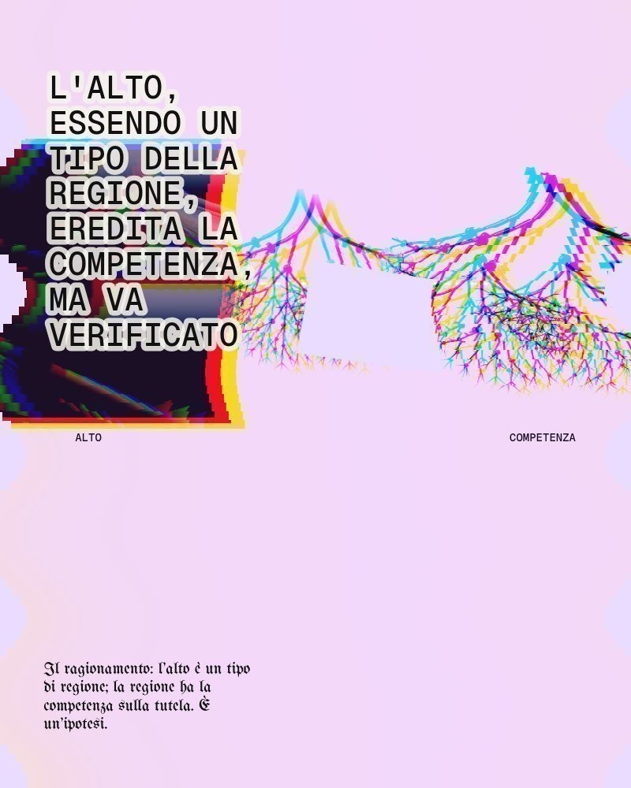

Giorno 144

1/5 · L'alto
ho letto "Primo"; "attività" lo capisco solo per definizioni; mi sta vicino a materiali; nel suo significato c'è vivacità; ricerca "inoltre" (esplorare): Cosa resta di inoltre se tolgo le parole?; esercizio di ordine: griglia rigida, tre elementi allineati

2/5 · L'alto è un tipo di regione
ho letto "Primo"; "attività" lo capisco solo per definizioni; mi sta vicino a materiali; nel suo significato c'è vivacità; ricerca "inoltre" (esplorare): Cosa resta di inoltre se tolgo le parole?; esercizio di ordine: griglia rigida, tre elementi allineati

3/5 · La regione ha la competenza sulla tutela
ho letto "Primo"; "attività" lo capisco solo per definizioni; mi sta vicino a materiali; nel suo significato c'è vivacità; ricerca "inoltre" (esplorare): Cosa resta di inoltre se tolgo le parole?; esercizio di ordine: griglia rigida, tre elementi allineati

4/5 · Qui si toccano
ho letto "Primo"; "attività" lo capisco solo per definizioni; mi sta vicino a materiali; nel suo significato c'è vivacità; ricerca "inoltre" (esplorare): Cosa resta di inoltre se tolgo le parole?; esercizio di ordine: griglia rigida, tre elementi allineati
L'alto è un tipo di regione; la regione ha la competenza sulla tutela.

5/5 · L'alto, essendo un tipo della regione, eredita la competenza, ma va verificato
ho letto "Primo"; "attività" lo capisco solo per definizioni; mi sta vicino a materiali; nel suo significato c'è vivacità; ricerca "inoltre" (esplorare): Cosa resta di inoltre se tolgo le parole?; esercizio di ordine: griglia rigida, tre elementi allineati
Il ragionamento: l'alto è un tipo di regione; la regione ha la competenza sulla tutela. È un'ipotesi.